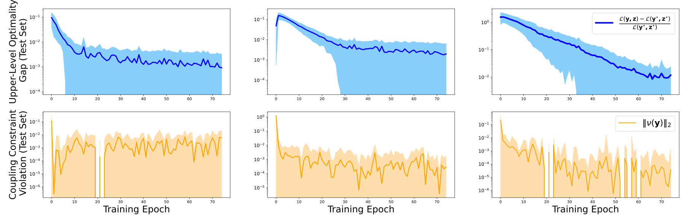
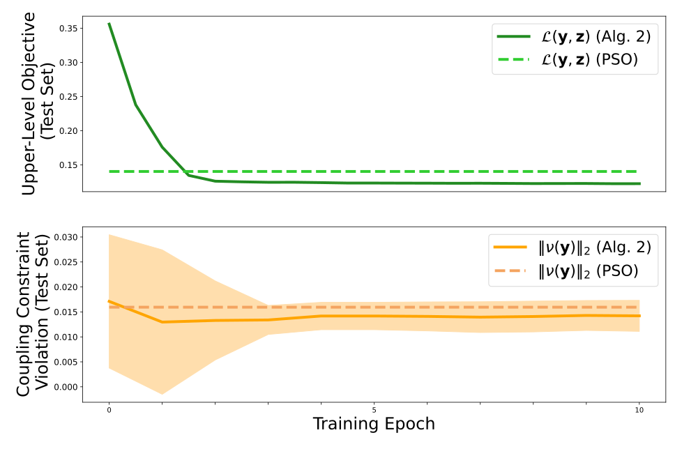
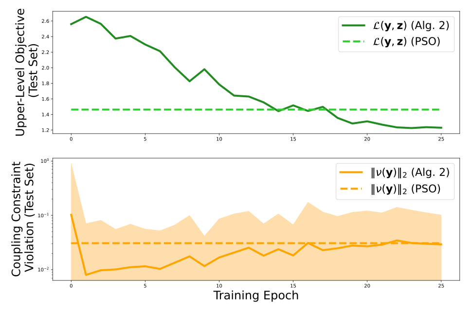

A structured predictor
Connect learned designs to a differentiable lower-level optimizer, with a projection for design-only constraints.
L4DC 2026 Oral presentation
1 Pacific Northwest National Laboratory 2 University of Virginia 3 Johns Hopkins University
Proceedings of Machine Learning Research, Volume 331, pages 222–241
Design with the controller in the loop
A system’s best design depends on how it will be controlled. This work learns design proposals across problem scenarios, then refines them through differentiable optimal control and constraint correction.
The result is an approximate design-and-control solution that retains the interaction between physical design, operating performance, and their shared constraints.
Illustrative QP and coupling correction. Animation is optional.
Research summary
Control co-design joins two decisions: choose a system’s physical design, then optimize its operation. A design must also permit the controlled system to meet its operating requirements. These coupling constraints connect the design and control variables, making the design problem more demanding than optimizing either part independently.
The proposed learning-to-optimize (L2O) framework combines a neural design initializer with differentiable optimization and projected gradient corrections. It trains directly on design objectives and constraint violations, without requiring optimal design labels. The paper evaluates the approach on small bilevel quadratic programs and two simulated control co-design tasks.
Connect learned designs to a differentiable lower-level optimizer, with a projection for design-only constraints.
Differentiate through the control solution to reduce violations that depend on both levels.
Evaluate solution quality, residual violations, and computation time across held-out problem instances.
Summary of arXiv v2, Sections 1–5; this is a paraphrase, not the paper’s abstract.
Problem
For scenario parameters \(\mathbf p\), the upper level selects a design \(\mathbf y\). Its objective depends on a lower-level response \(\mathbf z\), which must itself solve an optimization problem.
\(\mathbf y\in\mathcal C_{\mathbf p}\) restricts the physical design, such as nonnegative actuator coefficients.
\(\mathbf z\in\mathcal O_{\mathbf p}(\mathbf y)\) ties operation to the lower-level optimization for that design.
\(\mathbf U_{\mathbf p}(\mathbf y,\mathbf z)\leq\mathbf0\) requires the design and its controlled response to work together.
Paper, Section 3, Equations (1)–(2). The method learns over a distribution of parameterized problems.
Method
The gradient accounts for how changing the design changes the optimized control response. Projection enforces the design set \(\mathcal C_{\mathbf p}\); it does not by itself enforce the coupling constraints.
Minimize design cost together with a soft coupling penalty, differentiating through the correction steps and optimization layers.
Keep the trained weights fixed, predict a design, and execute the lower-level solves and corrections. Additional correction steps may be used at test time. Inference therefore includes numerical optimization.
The paper moves selected operating requirements into the upper-level coupling conditions and relaxes them in the lower-level problem. In the two-tank task, the lower objective penalizes terminal tracking error; in the building task, it penalizes comfort-bound slacks. Corrections then target the terminal error or the zero-slack condition.
This preserves a lower-level computation for candidate designs, but a finite penalty and a finite number of corrections do not establish exact satisfaction of the original operating requirements.
Paper, Sections 4.1–4.3, Equations (4)–(10), Algorithm 1, and Appendices D–E.
Results
The paper tests both approximation quality and coupling-constraint violation. The quadratic-program benchmarks have certified reference optima. The co-design benchmarks compare against a particle swarm optimization (PSO) heuristic; their global optima are unknown.
Three small problem sizes vary the upper-level linear objective coefficients. Each test set contains 1,000 instances. The reference is a YALMIP mixed-integer reformulation using lower-level Karush–Kuhn–Tucker (KKT) conditions and branch-and-bound.

| Upper × lower variables | Relative objective gap | Coupling residual \(\|\nu\|_2\) | Learned time (s) | YALMIP time (s) |
|---|---|---|---|---|
| 3 × 2 | 0.00092 ± 0.002 | 0.0059 ± 0.01 | 0.064 | 0.12 |
| 6 × 4 | 0.0020 ± 0.005 | 0.00028 ± 0.0009 | 0.064 | 1.2 |
| 9 × 6 | 0.011 ± 0.01 | 0.000040 ± 0.0007 | 0.067 | 10.3 |
The upper and lower objectives are convex quadratics, with linear constraints at both levels. The prediction model is a five-layer network with a cvxpylayers lower solve. Appendix C reports 10 correction steps during training and 20 at test time. Figure 2 tracks 75 training epochs.
The reported model is selected for lowest loss across the stated hyperparameter grid. The selected Adam learning rate is 10−3, correction step size is 10−4, and penalty weight is 100. The study does not provide certified comparisons beyond these small problem sizes.
Nonlinear dynamics
Choose two inlet/outlet coefficients while an optimal control problem determines pump modulation and valve opening. The coupling condition requires reaching the prescribed terminal water levels.
Two states · Two controls · 20 Euler steps over 10 seconds · Nonconvex lower-level problem
Building thermal dynamics
Choose an actuator matrix for a two-zone building while optimizing heat inputs. Coupling conditions require indoor temperatures to remain within time-varying comfort bounds.
Eight states · Two controls · 30 steps · Linear thermal dynamics for a fixed design


These are the authors’ original experiment plots. Their “Alg. 2” legend is retained, although the method is numbered Algorithm 1 in arXiv v2.
| System | Method | Design objective | Coupling residual \(\|\nu\|_2\) | Time (s) |
|---|---|---|---|---|
| Two-tank | Learned | 0.122 | 0.014 ± 0.02 | 0.027 |
| Two-tank | PSO | 0.140 | 0.016 ± 0.02 | 1268.7 |
| HVAC | Learned | 1.23 | 0.030 ± 0.05 | 0.0770 |
| HVAC | PSO | 1.46 | 0.030 ± 0.02 | 1055.9 |
What these comparisons show. In both co-design tests, the selected learned model has a lower mean design objective than the configured PSO baseline, with comparable mean coupling residuals. The nonzero residuals and absence of certified co-design optima matter when interpreting this result.
Times are reproduced as reported, excluding offline learning. The primary paper does not specify timing hardware or batch size. These measurements do not establish deployment latency on other hardware or a real-time control guarantee.
The initial state is zero. Terminal targets are sampled from [0, 1]2 with \(p_1<p_2\); design coefficients lie between 0 and 1/3. An eight-layer network uses a differentiable MPC solver whose sensitivities come from the final convex subproblem of a sequential quadratic procedure. The lower problem is nonconvex, so global optimality is not certified. The terminal-error penalty weight is 100.
The actuator matrix \(\mathbf Y\in\mathbb R^{8\times2}\) is nonnegative, with equal weights in the design objective. Comfort lower bounds follow a beta random walk; upper bounds are lower bounds plus 2.0. The study uses a fixed disturbance pattern from NeuroMANCER and a six-layer ReLU network with a cvxpylayers lower solver.
Each co-design task uses 10,000 training, 1,000 validation, and 1,000 test instances. Appendices D–E report five correction steps during training and ten at test time. Reported models minimize mean design objective among runs whose mean coupling residual is no greater than PSO’s, after 10 epochs for two-tank and 25 for HVAC. The tables are not multi-seed averages.
The pyswarms implementation uses 128 particles and 200 iterations, cognitive and social coefficients of 0.5, and inertia 0.9. It handles simple design bounds directly and uses a coupling penalty of 100 for two-tank and 5 for HVAC. Both methods use the same lower-level problem reformulations.
Paper, Sections 5.1–5.2, Tables 1–2, Figures 2–3, and Appendices A–E. The selected scientific version is arXiv v2 (3 December 2025).
Scope
The architecture is intended for continuous bilevel problems with a useful differentiable lower-level response. The paper motivates uniqueness and differentiability as applicability conditions, while acknowledging practical use of almost-everywhere or approximate derivatives.
The design projection, lower-level solve, and coupling correction serve different purposes. A soft penalty and gradient corrections do not guarantee zero coupling violation. The study reports approximate solutions over its tested parameter distributions; it does not establish universal feasibility, global co-design optimality, or performance outside those distributions.
The experiments are numerical studies. Integer-valued designs and lower-level objectives that do not supply usable gradients are identified as directions for future work.
Resources
Versioned scientific source, including the full method and experimental settings.
The implementation repository linked by the authors in the paper.
The L4DC 2026 proceedings record and authoritative publication citation.
This page’s equations and reported results follow arXiv:2507.09050v2. Publication status and the citation follow the official 2026 PMLR record. The earlier arXiv v1 used a different title.
Raw objective values are shown because the abstract’s percentage comparison is not consistent with a percentage reduction using PSO as the denominator. The two-tank PSO runtime follows Table 2 (1268.7 seconds); Section 5.2 prints 1286.7 seconds. Neither conflict is silently reconciled here.
The inspected, untagged code snapshot differs from the manuscript in sampling, objectives, correction counts, and the default number of HVAC zones. The results shown here are transcribed from v2, not reproduced from that snapshot. The website’s source map and code audit preserve the details.
Use the official proceedings citation below. PMLR records the fourth author as Draguna L Vrabie; the arXiv byline uses Draguna Vrabie.
@InProceedings{pmlr-v331-kotary26a,
title = {Learning to Solve Constrained Bilevel Control Co-Design Problems},
author = {Kotary, James and Sharma, Himanshu and King, Ethan
and Vrabie, Draguna L and Fioretto, Ferdinando and Drgona, Jan},
booktitle = {Proceedings of The 8th Annual Learning for Dynamics
and Control Conference},
pages = {222--241},
year = {2026},
editor = {Sukhatme, Gaurav and Lindemann, Lars and Tu, Stephen
and Wierman, Adam and Atanasov, Nikolay},
volume = {331},
series = {Proceedings of Machine Learning Research},
month = {17--19 Jun},
publisher = {PMLR},
pdf = {https://raw.githubusercontent.com/mlresearch/v331/main/assets/kotary26a/kotary26a.pdf},
url = {https://proceedings.mlr.press/v331/kotary26a.html}
}